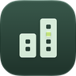

Zum Inhalt springen

thermoctl
fleet
Funktionen
Dokumentation
So funktioniert’s
Fleet ausprobieren
Dokumentation · Themen
Bitte JavaScript aktivieren, um die bebilderten Dokumentationskapitel zu öffnen. Ohne JavaScript finden Sie die Dokumentation als Text im
Repository
(README, docs/ und image/README.md).
Produktansicht
×